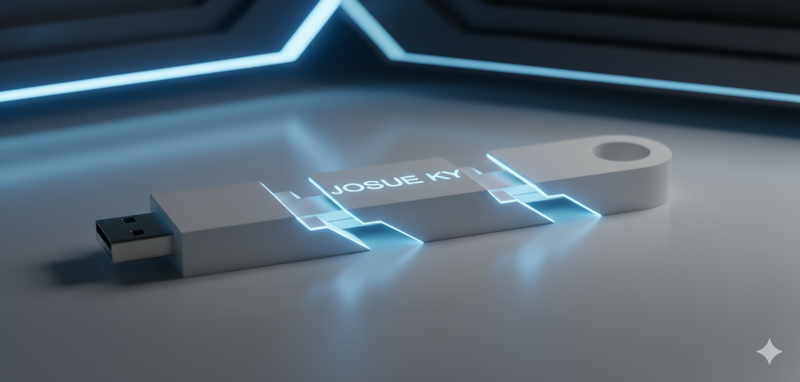
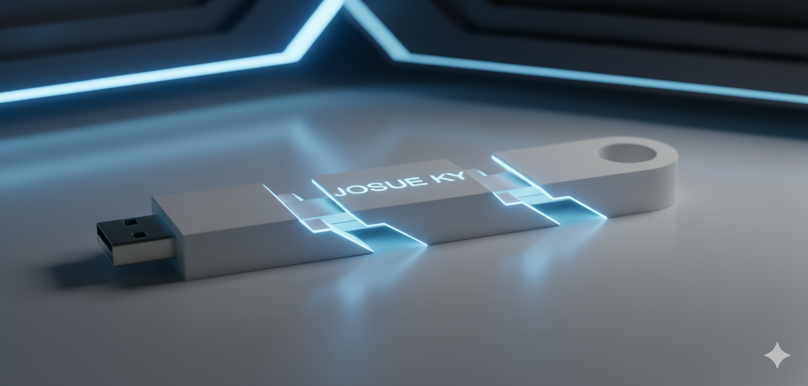

BIENVENIDO A JM INNOVACIONES
Este sitio reúne una serie de propuestas de hardware y software diseñadas con la intención de mejorar la experiencia del usuario.
REORGANIZACION DE LA TARJETA MADRE
Esta tarjeta madre está pensada para resolver problemas reales de diseño y, al mismo tiempo, mostrar una estética más limpia y moderna. Todos los chips que vienen soldados de fábrica quedaron cubiertos por una estructura que funciona como protección física y como base para colocar disipadores. Además, la tarjeta integra un sistema de enfriamiento líquido que puede conectarse directamente a la tarjeta gráfica, logrando un circuito de refrigeración más eficiente.
Un cambio visual importante es que la tarjeta gráfica ahora va montada en vertical. Esto sirve para mostrar su diseño y también para reducir el espacio que ocupa horizontalmente.
Los módulos de RAM se colocaron en ángulo. Aunque no afecta mucho el rendimiento, estéticamente es llamativo y podría ayudar en ventas; si no resulta útil, se eliminará en revisiones futuras.
Por ultimo, todo el cableado está reorganizado para dirigirse a la parte trasera. Esto evita que los cables pasen por el frente y mejoren la presentación interna del equipo.
CHIP BIOS INTERCAMBIABLE
La idea central es crear un sistema BIOS modular, donde tanto el chip como la estructura física puedan intercambiarse fácilmente. Esto permite reparaciones rápidas, actualizaciones o reemplazos sin depender de soluciones permanentes.
Caracteristicas
- Chip BIOS removible con pines en la parte inferior.
- Reducción gradual de pines para simplificar la conexión.
- Compatibilidad con diferentes estructuras o soportes.
- Sistema inspirado en procesadores, pero con un tipo de entrada diferente.
INTERFAZ DEL BIOS
La interfaz interna del BIOS fue rediseñada para ser más clara, entendible y accesible. Incluye:
- Organización visual más limpia.
- Mejor navegación.
- Notas explicativas al seleccionar opciones, para saber exactamente qué cambio se realizará.
BUS AVANZADO
Este bus fue diseñado con un enfoque completamente funcional: resistencia, velocidad y estabilidad por encima de la estética. Desde los bocetos iniciales se planteó una estructura poco convencional, pensada para soportar uso rudo y mantener un rendimiento constante incluso en entornos exigentes.
Características
- Cable de grosor aumentado, que mejora la durabilidad y tolerancia al desgaste./li>
- Conector central con canal de fibra óptica, dedicado a transmisión de datos a alta velocidad.
- Pines laterales de aleación plata mas cobre, pensados para energía y como respaldo de transmisión alterna.
- Estructura reforzada internamente, formada por una malla flexible y varias capas de protección.
- Entradas magnéticas en ambos extremos, que facilitan el acoplamiento y mejoran la fijación al dispositivo.
INNOVACIONES DE ALMACENAMIENTO
Este programa está diseñado para administrar archivos y discos duros de manera sencilla, tanto en un entorno común como en uno más especializado.
Funciones principales
- Navegar entre carpetas y documentos de forma clara y rápida.
- Acceder a archivos comunes con una interfaz práctica.
- Modo avanzado para modificar la estructura interna de los discos.
- Pensado para usuarios normales o técnicos según la configuración.
¿Cual es su objetivo?
Brindar una forma de gestionar almacenamiento sin complicaciones, permitiendo desde tareas simples hasta modificaciones más profundas del sistema de archivos.
 

INNOVACION DE PERIFERICOS
Cámara Web con Seguimiento Automático
Esta cámara web integra motores internos en su estabilizador, lo que le permite girar en 360° y también inclinarse en distintas direcciones. Con ayuda del software, la cámara detecta automáticamente a una persona en la imagen y sigue sus movimientos sin importar hacia dónde se mueva. Es ideal para videollamadas, grabaciones y presentaciones dinámicas sin necesidad de ajustar la cámara manualmente.
Escáner Automático para Libros Completos
Este escáner está diseñado para digitalizar libros enteros sin intervención humana. Cuenta con un sistema mecánico que pasa las páginas automáticamente mientras una cámara interna captura cada hoja con precisión. Es útil para bibliotecas, digitalización de archivos históricos o estudiantes que necesitan convertir libros físicos en PDF sin perder tiempo.
Impresora Autónoma con Voz y Copia de Pantalla
Esta impresora puede funcionar sin estar conectada directamente a la corriente, gracias a un sistema interno de alimentación recargable. Además, reconoce comandos de voz para imprimir documentos específicos y puede imprimir lo que aparece en pantalla simplemente con decirlo. El objetivo es simplificar el proceso de impresión y hacerlo completamente manos libres.
Mouse con Reconocimiento de Movimiento en el Aire
Este mouse incluye sensores avanzados capaces de detectar el movimiento de tu mano incluso cuando no estás tocando el dispositivo. Así, ciertos gestos realizados en el aire se interpretan como comandos dentro del sistema operativo, permitiendo acciones rápidas sin mover físicamente el mouse sobre la mesa.
Teclado con Vibración Integrada Tipo “Control”
Este teclado incorpora vibración en las teclas, similar a un control de consola. La intención es que el usuario reciba retroalimentación táctil al presionar teclas específicas, útil en videojuegos, notificaciones o funciones personalizadas.